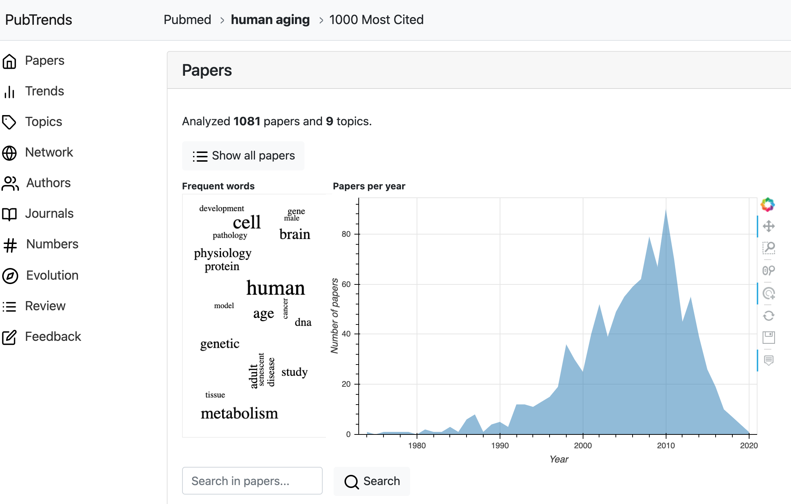

PubTrends
PubTrends is an exploratory tool for researchers providing faster trends analysis
and breakthrough papers
discovery among the steadily growing flow of papers worldwide. The service aims to solve three tasks: give a
brief overview of the field, explore popular trends in publications, and help to find new promising
directions.
Open Access Paper: https://doi.org/10.1145/3459930.3469501
Poster is available here.
Citation: Shpynov, O. and Nikolai, K., 2021, August. PubTrends: a scientific literature explorer. In
Proceedings of the 12th ACM Conference on Bioinformatics, Computational Biology, and Health Informatics (pp.
1-1).
Contents
- Dataset section described publications dataset
- Workflow section describes general analysis workflow
- Example section contains a detailed description of analysis results
- Papers section contains summary overview of analyzed papers
- Trends section shows most cited papers per year
- Network section describes networks of citations and similarity
- Topics section contains detailed information about all the papers for each topic
- Review section describes automatic review generation for scientific papers
- Other section contains other analyses
- Paper Analysis section describes single paper analysis
Dataset
PubTrends contains 30 mln papers and 175 mln citations of biomedical literature from the
PubMed® database with 170 mln papers and 600 mln citations
from the Semantic Scholar archive. Semantic Scholar
aggregates significant journals and publishers, including Springer Nature, ACM, etc.
Workflow

All the analysis starts with
-
The search query - first of all most cited papers containing the search query are found.
User can use double quotes wrapping to search for exact phrase or find documents, which contain all the words in the query. The number of papers can be quite significant, so it's natural to use some ranking and filtering to focus on either most cited, or most recent articles.
This set of papers is further extended by reference to papers which are similar, but may not contain some of the search words. - Single paper - the service looks for connected papers and proceeds one step further by references to find out which of the connected papers have co-citations, common references, etc.
Finally, user gets full report covering all the aspects of analysis.
Example
Here we describe the analysis for the search query human aging.
We focus on 1000 most cited papers from the PubMed, with review papers, extending search set with connected
papers
by 20%.
Learn more exploring one of precomputed search queries from the PubTrends main
page.
Report

The report page contains all the analytics and consists of several parts: Papers, Trends, Topics, etc.
Side bar on the left of the page can be used for navigation.
Please use About button - PubTrends will guide you through the report.
Papers
The Papers section demonstrates a birds-eye view of the field, including the total number of articles,
and extracted topics. Word cloud shows the most frequent words in titles and abstracts. Also, it
contains a summary plot of papers per year. Please note that the word cloud component is clickable, and
you can navigate to documents containing the selected word. Articles can be viewed as a plain list, as
well.
Topics were computed by hierarchical clustering of papers embeddings based on text and graph embeddings.
Trends
The Trends section contains an interactive visualisation of top-cited papers, organised by number and
citations count. Different types of articles are shown in different colours.
Most cited papers and papers with quickest growth of citations are also shown here. All the papers are
clickable, and we can explore details on a separate page.
Network
Topics are closely related groups of documents. Similarity between papers is computed based on bibliographic
coupling, direct citations, co-citations, and text similarity
between papers. Community detection algorithm is used to extract dense clusters of papers or topics. Small
topics
are merged together to get reasonable number of topics.
Overall structure of topics within a research field can be visualised as a graph.
This graph allows you to find out the most important spots. Hover on any nodes to view paper details, filter papers with dedicated filter field, configure visualization options and more. On the screenshot you can see papers coloured by different topics and the paper is highlighted with its similar neighbours.
Topics
In the section Topics for each topic, the application shows familiar to users word cloud and articles plot. Word
cloud is built from terms specific to the given topic with respect to others. These words are computed using
TF-IDF normalization, a standard approach in the field of natural language processing. The more important word
is the more significant fraction of papers contains it.
The topic below is dedicated to DNA methylation changes related with human aging.
Review
Generate a review for the chosen topic - a set of sentences from top cited papers with the highest probability to be included in a real review paper.
Open Access Paper: https://arxiv.org/abs/2010.04147
Citation: Nikiforovskaya, A., Kapralov, N., Vlasova, A., Shpynov, O. and Shpilman, A., 2020, December.
Automatic generation of reviews of scientific papers. In 2020 19th IEEE International Conference on Machine
Learning and Applications (ICMLA) (pp. 314-319). IEEE.
Other
Other sections include information about the most popular journals, most productive authors, etc.
Paper analysis
In case when user is interested in the particular paper, PubTrends can help user to find similar papers and most important prior and derivative works. User can use title name of DOI for paper identification. The service will search for paper, analyze connected papers and proceed one step further by references to find out which of the connected papers have co-citations, common references, etc. When the set of papers is collected, papers similarity is analyzed.
Your feedback is welcome
Let's make the service better together! We would love to hear your opinion on the results.
Feel free to fill the feedback form on the bottom of reports page or use emotions buttons to
share your thoughts.